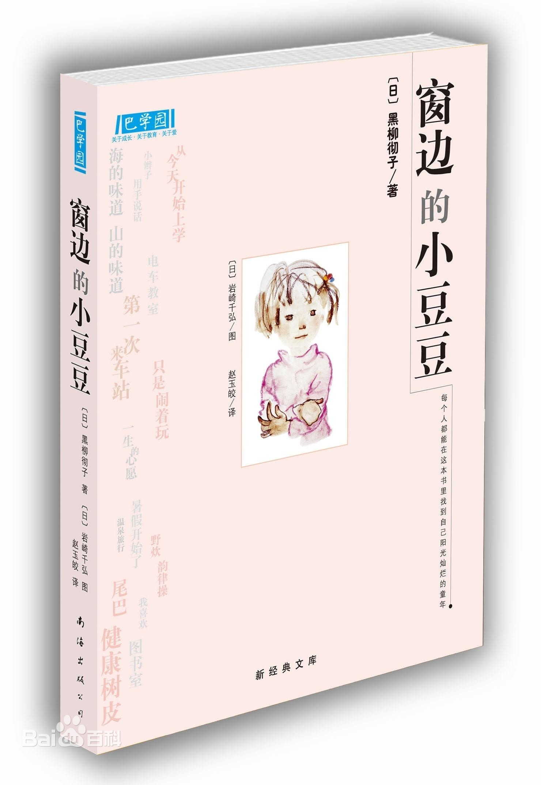
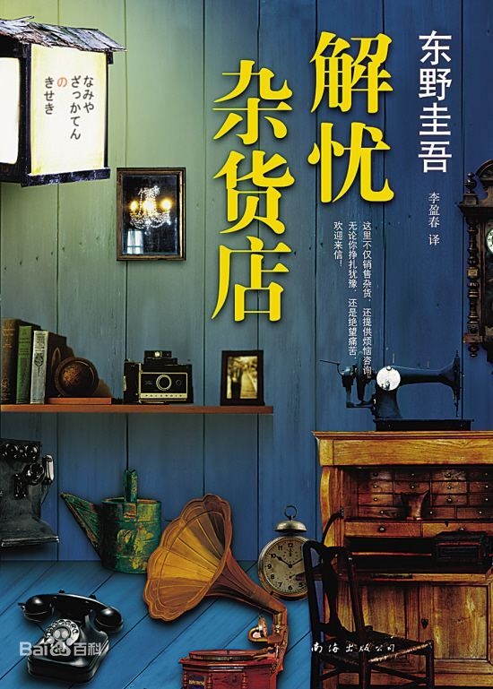

书籍推荐


| 书籍图片 | 书籍介绍 |
|---|---|
|  | 《窗边的小豆豆》是日本作家、主持人黑柳彻子创作的儿童文学作品，首次出版于1981年。这本书讲述了作者上小学时的一段真实的故事：小豆豆（作者）因淘气被原学校退学后，来到巴学园。在小林校长的爱护和引导下，一般人眼里“怪怪”的小豆豆逐渐变成了一个大家都能接受的孩子。巴学园里亲切、随和的教学方式使这里的孩子们度过了人生最美好的时光.2020年4月，列入《教育部基础教育课程教材发展中心 中小学生阅读指导目录（2020年版） |
|  | 《解忧杂货店》是日本作家东野圭吾写作的长篇小说。2011年于《小说野性时代》连载，于2012年3月由角川书店发行单行本。该书讲述了在僻静街道旁的一家杂货店，只要写下烦恼投进店前门卷帘门的投信口，第二天就会在店后的牛奶箱里得到回答：因男友身患绝症，年轻女孩月兔在爱情与梦想间徘徊；松冈克郎为了音乐梦想离家漂泊，却在现实中寸步难行；少年浩介面临家庭巨变，挣扎在亲情与未来的迷茫中……他们将困惑写成信投进杂货店，奇妙的事情随即不断发生.该书获得第七届中央公论文艺奖 ,苹果日报翻译小说销售排行榜连续两季第二名，荣登纪伊国屋、诚品、博客来、金石堂各大排行榜第1名，亚马逊中国2015年度畅销图书榜第二。同名华语电影于2017年上映。2017年12月15日，亚马逊中国发布基于亚马逊阅读大数据产生的一系列年度阅读榜单。其中，东野圭吾的《解忧杂货店》连续4年上榜，又一次成为2017年亚马逊最畅销图书。 |
| 《摆渡人》是英国作家克莱儿·麦克福尔（Claire Mcfall）创作的小说，作者从少年人的角度洞悉人性的温情，通过男女主人公的所见所感，道出所有人对亲情、友情和爱情终极幸福的向往。《摆渡人》一举摘得五项世界文学奖，版权销售33个国家，是令千万读者灵魂震颤的心灵治愈小说。 |